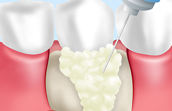
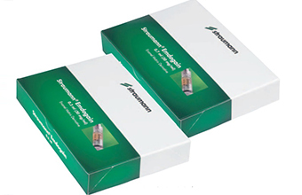
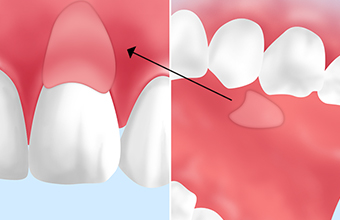
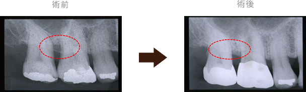
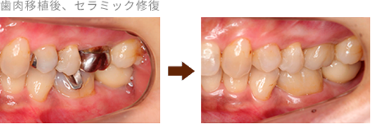
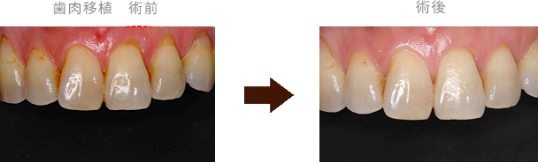
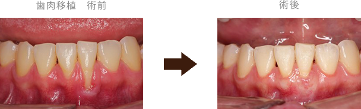

- トップ
- 歯周組織再生療法
高田歯科クリニックの歯周組織再生療法
横浜市港北区網島の歯医者「高田歯科クリニック」では、重症化した歯周病にも、さまざまな治療法で対応しています。保険適用での治療はもちろん、自由診療（自費診療）でのより質の高い治療も可能です。歯周再生治療や歯肉移植も手がける当院の歯周外科治療についてご説明します。
重度歯周病の対応する「歯周組織再生療法」

歯周病は慢性炎症性疾患であるために自覚症状に乏しく、気づいた時には手遅れというケースもあります。歯周組織再生療法は歯を支えている歯周組織（歯・セメント質・歯根膜・歯槽骨）を再生させる治療法です。
当院の歯周組織再生療法
歯周再生治療法（エムドゲイン）

歯周病に汚染された歯周組織をしっかりと除去した後は、損なわれた組織を再生するための処置が必要となります。歯周再生治療法（エムドゲイン）は、歯槽骨と歯肉の間に、エムドゲインゲル※を設置し、再生の早い歯肉の侵入を防ぎながら歯槽骨の再生を促す処置です。エムドゲインゲルは、2～4週間で身体に吸収されます。
※ブタの歯胚から抽出されたエナメルマトリックスタンパク質で、世界各国で使用されていますが、現在まで感染症などの報告はなく、安心して使用できるものです。
歯肉移植

歯周病、加齢、外的な刺激によって歯茎が下がり、冷水通の症状がある場合や歯根が露出しているような箇所には、歯肉移植（結合組織移植）で改善を図ります。歯肉に覆われていた歯根が露出することにより、審美的な問題や知覚過敏、根面う蝕を引き起こす可能性があります。
マイクロスコープ（手術用顕微鏡）下にて歯肉移植を、低侵襲性に行うため痛みはほぼありません。
当院の症例紹介
歯周再生治療法（エムドゲイン）

術前と比較して術後では、不透過性が高まっているように見られます。
歯周組織再生療法後、セラミック修復

主訴：左下の奥歯が痛い
治療：カリエス治療＋歯肉移植＋セラミック修復
治療回数：6回（コンサルテーション含む）
費用：料金表をご覧ください
リスク等：移植した歯肉は強いブラッシングで再度退縮する可能性があります。
（ブラッシング指導はさせて頂きます。）
歯肉移植

過度なブラッシングにより歯肉退縮してしまった患者様の移植前後
主訴：前歯がしみる
診断名：Cairoの分類Ⅰ、Miller ClassⅠ
性別：女性
術式：結合組織移植術
治療回数：1回
費用：料金表をご覧ください
リスク等：移植した歯肉は強いブラッシングで再度退縮する可能性があります。
（ブラッシング指導はさせて頂きます。）

矯正治療によって歯肉退縮をしてしまった患者様の移植前後
主訴：他院で矯正後歯肉が下がった前歯がしみる
診断名：Cairoの分類Ⅱ、Miller ClassⅢ
性別：女性
術式：結合組織移植術
治療回数：1〜2回
費用：料金表をご覧ください
リスク等：移植した歯肉は強いブラッシングで再度退縮する可能性があります。
（ブラッシング指導はさせて頂きます。）